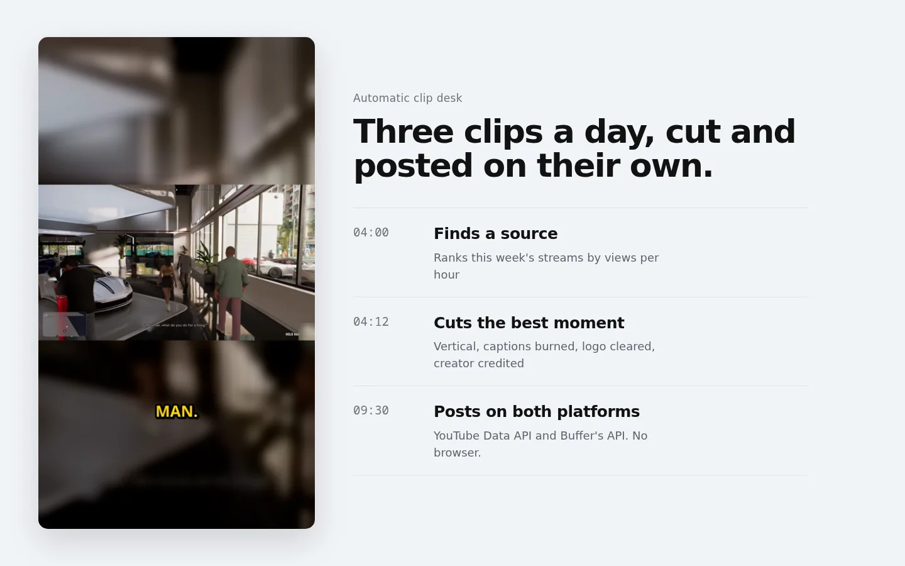

Case study · Automatic clip desk
Three clips a day, cut and posted before anyone opens a laptop.
A pipeline for a GTA VI clipping channel. It watches what is going viral this week, cuts the best moments into vertical clips, checks each one against a rulebook, and posts it to YouTube and TikTok on a fixed daily schedule. No editor, no scheduler subscription, no browser sitting open.
- Runs unattended
- Finds its own footage
- Checks before it posts
- Posts through two APIs
- Credits the original creator
- Free of per-post tools
- Finds a source
Ranks this week's uploads by views per hour - Reads the video
Transcribes the audio on the same machine - Cuts two clips
Reframes to vertical, burns captions - Checks both
Six rules, or the clip never reaches the queue - Posts them
YouTube schedules the time; TikTok queues through Buffer - Clears the disk
Source and queue copies go once both platforms hold the clip
43 seconds. One day of the desk: what it found at four in the morning, what it cut, and what went out at half past nine.

What it saves you
Clipping channels live or die on volume. Three posts a day is two hours of someone watching footage, choosing moments, cutting, captioning and uploading. It is also the first thing to stop when a person gets busy, and a channel that posts for nine days then disappears loses the audience it built.
So the whole loop moves onto a machine that does not get bored: choose, cut, check, post, clean up. What is left for a person is the part a machine is bad at — deciding what the channel is about, and looking at the numbers to change it.
What it does, in order
- Finds the sourceSeveral search angles plus a channel watchlist, ranked by views per hour rather than total views, so the clip comes from what is moving today.
- Picks the momentEvery second of the source is scored on loudness, reaction words and, when the platform publishes them, audience replay markers. A run of two or three beats outranks one loud shout, and the cut starts on the setup line rather than mid-sentence.
- Cuts itVertical 1080×1920, the game area held in frame over a blurred fill, word-level captions burned in, the streamer's corner logo cleared, and a two-second hook that says what the clip is before anything else happens.
- Posts itYouTube through its Data API, private on upload and public at the slot. TikTok through Buffer's API. Both hold the publish time themselves, so a machine that reboots at midnight still posts at ten.
What could go wrong, and what stops it
Automated posting fails in five ways that matter. Each one has a check you can point at.
| Risk | Guard | Seen |
|---|---|---|
| A junk clip goes out | Six rules run on every clip before it enters the queue: length, resolution and frame rate, hook length, burned captions, credit line, no watermark. A file that fails stays on disk and never reaches a platform. | Every queued clip passed all six |
| The same clip posts twice | Both platforms have a ledger keyed by file digest, and the poster refuses a file it has seen. After one real double-post, the check was tightened to require the caption to appear in the target account before the run counts as done. | Caught, then fixed |
| Someone's footage goes out uncredited | The credit line is generated from the source's own uploader handle and validated against the live channel. A clip with no handle in its record is skipped rather than posted bare. | 6 of 6 credits verified with a working channel link |
| A run dies silently | Any crash, expired token or empty day sends a message and an email with the file that failed. A quiet morning means it worked, not that nobody looked. | Token expiry, upload failure and “nothing cut today” all alert |
| The disk fills with source video | Source files expire a day after their clip is cut, and a queue copy goes once both platforms hold it. The cut master is kept, so a failed post is repostable. | 3.8 GB reclaimed on the first cleanup |
Where the data goes
- Stays on the machine
The downloaded source video, the cut clips, both posting ledgers, and the rulebook the checker reads.
- Leaves the machine
The finished clip to YouTube and to TikTok, a short alert to a Telegram bot, and — only while a post is pending — the clip on a public URL that Buffer fetches at publish time.
- Keys
OAuth credentials, the Buffer API key and the bot token sit in per-service config files with owner-only permissions, outside the repository. Nothing is committed, and nothing is pasted into a chat window.
- Exposure
The clip host is the only public thing: one URL prefix, random filenames, directory listing off, files removed within days.
Under the hood
A Python pipeline on an always-on home machine. No browser is in the production path: the posting half is two HTTP APIs, which is why the schedule survives reboots and why nothing breaks when a site changes its upload page.
- FindA scheduled job queries several search angles and a watchlist, keeps only uploads from the last few days, and ranks them by views per hour.
- Cutwhisper transcribes the audio on the CPU; a scorer turns the transcript and the audio energy into a per-second signal; the best non-overlapping moments become clips through ffmpeg.
- CheckA separate script reads the finished file, not the intent: duration, dimensions, frame rate, caption presence, watermark, credit. Non-zero exit means nothing is posted.
- PostYouTube Data API for upload plus a scheduled publish time; Buffer's GraphQL API for TikTok. Both write to a ledger that a cleanup job reads.
The decisions that took the longest
- APIs instead of a browserDriving the TikTok upload page in a real browser worked, and it was a trap: a logged-in profile that expires, a page that changes, and a fix every few weeks. Buffer has an audited TikTok integration and a GraphQL endpoint, so the production path became one HTTP call and no browser at all.
- Let the platform hold the timePosting “at ten” by waking a machine at ten is fragile. Both platforms accept a future publish time, so the machine's job is to hand over the clip early and forget it.
- Two beats, not one spikeThe first scorer ranked loudness peaks, which selected single shouts with no setup. It now counts beats inside the window and rewards coverage, so a clip has a beginning and a payoff — the difference between a moment and a clip.
- Checks read the file, not the planThe checker re-opens the finished video with ffprobe. It catches what the pipeline intended to do and did not — a missing caption track, a wrong frame size, a watermark still visible.
What the runs actually took
2 min of source audio, transcribed on 4 cores 24 s a 60-minute stream, end to end ~12 min queue copy + source video reclaimed 3.8 GB in one run software cost of the whole pipeline none
What it won't do
- It is not an editor
It cuts, reframes and captions. It does not write scripts, generate footage, or decide whether a joke is funny.
- It cannot judge permission
It works from public signals only. Whether a streamer is happy to be clipped, or whether a campaign covers the footage, is a decision a person makes once and writes into the rules.
- Clipping is not a monetisation plan
Third-party footage earns on campaign work and gets shaky when a channel tries to monetise it directly. That is a business call, and the pipeline does not pretend otherwise.
- One channel, one look
The rules, the caption voice and the slot times are written for one channel. A second channel is a second config, not a setting.
Publishing at volume?
Tell me the niche, how often you want to post, and which platforms. I'll show you what it cuts from your own sources — including the moments it rejected — before anything goes out.
Fixed scope, fixed price, quoted before I start. You own the code, and I reply within one working day.